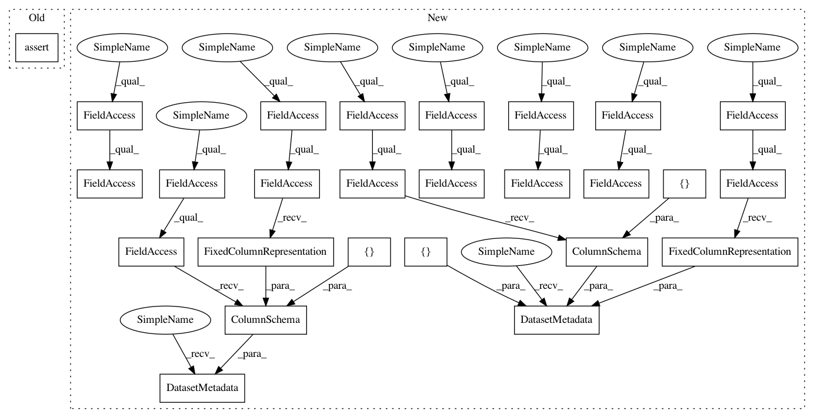

14ee57f33aa9a07fa6440c049fefd47099dbc5ae,tensorflow_transform/beam/impl_test.py,BeamImplTest,testNumericAnalyzersWithScalarInputs,#BeamImplTest#,410
Before Change
"size": tf.FixedLenFeature((), tf.int64, None),
"mean": tf.FixedLenFeature((), tf.float64, None)
})
self.assertDatasetsEqual(
transformed_dataset,
(expected_transformed_data, expected_transformed_metadata))
def testNumericAnalyzersWithNDInputs(self):
def preprocessing_fn(inputs):
def repeat(in_tensor, value):
After Change
}
input_data = [{"a": 4}, {"a": 1}]
input_metadata = dataset_metadata.DatasetMetadata({
"a": sch.ColumnSchema(tf.int64, [], sch.FixedColumnRepresentation())
})
expected_data = [
{"min": 1, "max": 4, "sum": 5, "size": 2, "mean": 2.5},
{"min": 1, "max": 4, "sum": 5, "size": 2, "mean": 2.5}
]
expected_metadata = dataset_metadata.DatasetMetadata({
"min": sch.ColumnSchema(tf.int64, [], sch.FixedColumnRepresentation()),
"max": sch.ColumnSchema(tf.int64, [], sch.FixedColumnRepresentation()),
"sum": sch.ColumnSchema(tf.int64, [], sch.FixedColumnRepresentation()),
"size": sch.ColumnSchema(tf.int64, [], sch.FixedColumnRepresentation()),
"mean": sch.ColumnSchema(tf.float64, [],
sch.FixedColumnRepresentation())
})
self.assertAnalyzeAndTransformResults(
input_data, input_metadata, preprocessing_fn, expected_data,
expected_metadata)
In pattern: SUPERPATTERN
Frequency: 3
Non-data size: 26
Instances
Project Name: tensorflow/transform
Commit Name: 14ee57f33aa9a07fa6440c049fefd47099dbc5ae
Time: 2017-04-26
Author: no-reply@google.com
File Name: tensorflow_transform/beam/impl_test.py
Class Name: BeamImplTest
Method Name: testNumericAnalyzersWithScalarInputs
Project Name: tensorflow/transform
Commit Name: 14ee57f33aa9a07fa6440c049fefd47099dbc5ae
Time: 2017-04-26
Author: no-reply@google.com
File Name: tensorflow_transform/beam/impl_test.py
Class Name: BeamImplTest
Method Name: testNumericAnalyzersWithScalarInputs
Project Name: tensorflow/transform
Commit Name: 14ee57f33aa9a07fa6440c049fefd47099dbc5ae
Time: 2017-04-26
Author: no-reply@google.com
File Name: tensorflow_transform/beam/impl_test.py
Class Name: BeamImplTest
Method Name: testTransformWithExcludedOutputs
Project Name: tensorflow/transform
Commit Name: 14ee57f33aa9a07fa6440c049fefd47099dbc5ae
Time: 2017-04-26
Author: no-reply@google.com
File Name: tensorflow_transform/beam/impl_test.py
Class Name: BeamImplTest
Method Name: testNumericAnalyzersWithNDInputs